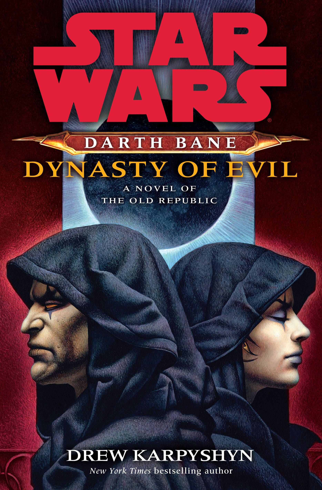

Star Wars - Dark Bane : La Dynastie du Mal

- Auteur : Drew Karpyshyn
- Genre : Science fiction
- Éditeur : Fleuve Noir
- Langue : Français
- ISBN : 978-2-265-09255-6
- Rayonnage : B52
- Résumé : Vingt ans se sont écoulés depuis que Dark Bane a anéanti l'ancien ordre voué au Coté Obscur et s'est imposé comme le dernier Seigneur Noir des Sith. Désormais ne subsistent plus que lui, pour incarner le pouvoir, et Zannah, son apprentie, pour le convoiter. À l'issue d'un ultime duel, Zannah doit tuer son maître et prendre sa place, mais elle tarde à relever le défi. Bane, qui refuse de voir son rêve se briser à cause de la faiblesse de son apprentie, s'est juré de trouver l'holocron de Dark Andeddu qui renferme le secret de l'immortalité. Afin de mener ses plans à bien, il éloigne Zannah en lui confiant une mission de reconnaissance. Seulement, elle n'est pas dupe et pressent que son impitoyable Maître lui cache quelque chose. Il est temps pour elle de passer à l'action...
Du même auteur
Du même genre